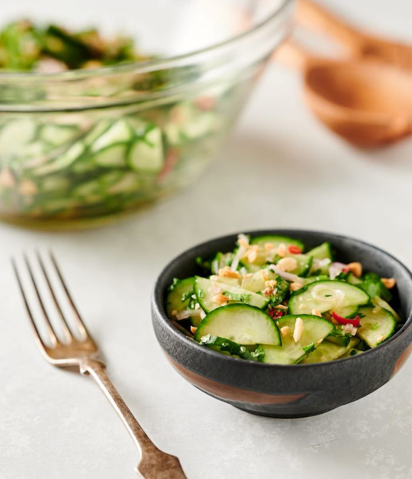

Thai Cucumber Salad

Thai cucumber salad works with any Asian inspired grilled or fried chicken.Perfect for those late summer or early fall backyard BBQs.
It’s great any time of year really. Cucumbers are amazing fresh from the field. But they are still pretty good all year round.
Information
- Prep Time : 15 minutes
- Cook Time : 5 minutes
- Total Time : 20 minutes
- Servings : 6
- Calories : 48 kcal
Ingredients
- 2 english cucumbers sliced thinly
- 2 large shallots sliced thinly
- 2 tbsp fish sauce
- 1 tbsp lime juice
- 2 tsp palm sugar jaggery or even white sugar works
- 1 clove garlic crushed
- 1/4 cup cilantro chopped
- 2 thai red chilies sliced thinly
- 2 tbsp chopped roasted peanuts
Steps
-
Combine the fish sauce, lime juice, garlic and sugar. Stir to combine. This is your dressing.
-
Cut the cucumber in half and slice thinly.
-
Combine the cucumber, dressing, red chilies and cilantro.
-
Garnish with peanuts.
-
Serve or refrigerate a few hours if needed.
Back To Home Page